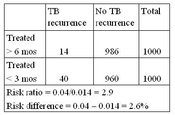
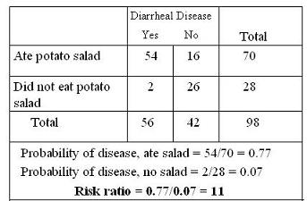
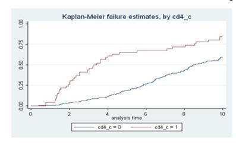

Measure of Assocation - Risk Ratio
Lead Author(s): Jeff Martin, MD
Definition of Risk
In a cohort study:
Risk is based on proportion of persons with disease = cumulative incidence
The concept of risk reflects the proportion of persons experiencing the event or outcome or disease.
Definition of Risk Ratio
Risk ratio = ratio of 2 cumulative incidence estimates = relative risk
If the concept of risk reflects the proportion of persons experiencing the event or outcome or disease,
- it follows that two cumulative incidences are needed for a risk ratio or relative risk.
Why Use Risk Ratio?
Risk ratio gives a relative measure
- Relative measure gives better sense of strength of an association between exposure and disease for inferences about causes of disease
Because a ratio measure gives the incidence in one group relative to another, the magnitude of the ratio reflects the strength of the association between the exposure and the disease.
- The strength of association is one of the criteria considered in assessing causality in the relationship between an exposure and a disease.
- So ratio measures are more useful in making inferences about the causes of disease.
- Ratio measures are also given by the most commonly used multivariate analyses such as logistic regression and proportional hazards regression.
Example of Absolute versus Relative Measure of Risk
In practice many risk factors have a relative measure in the range of 2 to 5.
In the table below it looks like a ratio of about 3, treating more than 3 months really does make a difference,
- but because TB recurrence is a relatively rare event in treated patients, the absolute difference of 2.6% is not so impressive.
- The absolute measure is important when cost effectiveness is being evaluated.

If incidence is very low, relative measure can be large but difference measure small.
Example of Risk Ratio in a Cohort with Complete Follow-up
This is an example (below) from an outbreak of gastrointestinal illness of a risk ratio from cohort data.
- We have equal follow-up on everyone in the cohort.

Because the follow-up is short and identical for everyone, the risk ratio is just the ratio of the proportion
- With disease in the exposed group (those who ate the potato salad) and
- With disease in the unexposed group (those who did not eat the potato salad).
Eleven is a large value for a risk ratio but that might be expected in a study such as this looking for a single likely food source for the outbreak.
So the RR=11 is taken as strong evidence for assigning causality to eating the potato salad. It is highly likely that the potato salad caused the outbreak of gastroenteritis.
Risk Ratio in a Cohort with Censoring
In many cohort studies there is unequal follow-up time and consequently censoring.
Follow-up in these cohorts, which are not very short term outbreak investigations, have differing amounts of follow-up time on the subjects.
The risk of the event has to be estimated:
- in the exposed and
- in the unexposed group
Example of Risk Ratio in a Cohort with Censoring
In the Kaplan-Meier analysis of the survival in two groups (below), you have to choose a point in time.
For Example: At 6 years, % dead in low CD4 group = 0.70 and in high CD4 group = 0.26.
Risk ratio at 6 years = 0.70/0.26 = 2.69

As you can see from inspecting the curve, the risk ratio will be different for different points in time.
- If one point in time is selected, then the risk ratio becomes the ratio of the two proportions failing (or surviving, if you prefer) at that point in time.
- IN reporting Kaplan-Meier results you must always specify at what amount of follow-up time.
- This applies to the risk ratio as well.
NOTE : Risk ratio would be different for different follow-up times.